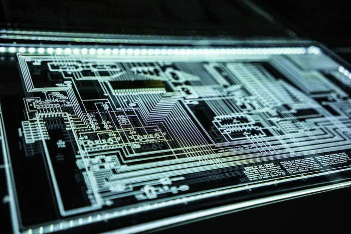
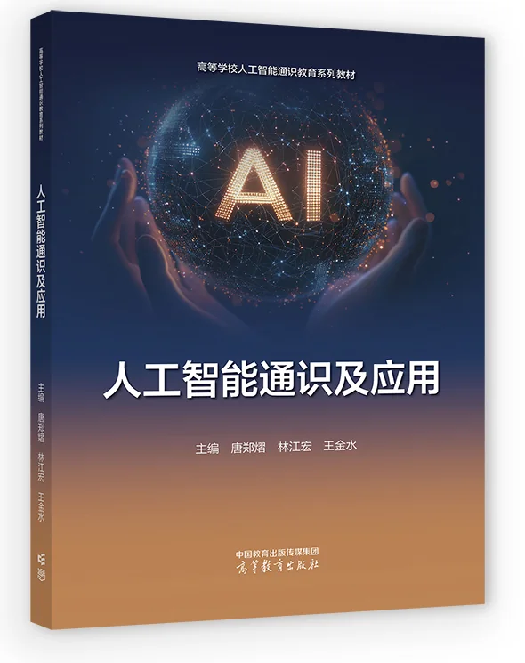

AI / 研究项目

AI 与司法实践
从类案检索到裁判辅助，梳理人工智能进入司法场景后的机会、风险与人类判断的边界。
这是一份与《人工智能通识及应用》教材同步的伴学地图。用 15 个可顺序学习的知识点、可视化框架与即时练习，帮助你理解技术、判断影响，并在真实场景中负责任地使用人工智能。
不必从第一页读到最后一页。输入一个概念、一个案例，或你正在困惑的问题。
我们不按“名词表”组织知识，而是把教材的 10 章重新编排为五个相互关联的模块，并拆成 15 个可顺序学习的知识点：先建立坐标，再理解原理，最后进入真实世界。
15 讲系统课程 每讲配可视化框架与即时练习，支持顺序学习或直接跳转 查看学习路径设计从概念、能力与分类出发，沿起步、黄金、反思、应用、寒冬与复苏的脉络，理解 AI 并非一条直线进步的历史。同时关注中国人工智能的早期探索、产业崛起与国家战略。
理解机器学习的基本范式、神经网络与深度学习、自然语言处理和大模型原理。重点不是记住术语，而是知道模型从哪里获得能力、为什么会出错，以及“会生成”为什么不等于“会理解”。
把技术放回社会关系中观察：任务与岗位如何变化，教育公平会被放大还是缩小，算法偏见如何通过数据与代理变量进入决策，以及隐私、责任与环境成本应如何被纳入设计。
分析人工智能在类案检索、电子卷宗、庭审记录与裁判辅助中的实际应用，讨论可解释性、自动化偏见、程序正义与人类最终决定权。并比较欧盟、中国、美国与国际组织的治理路径。
从大语言模型应用、AI 赋能办公与学习，到多媒体创作与智能体开发。练习任务拆解、上下文提供、结果核验与隐私保护，让工具真正服务于思考，而不是替代思考。
从类案检索到裁判辅助，梳理人工智能进入司法场景后的机会、风险与人类判断的边界。

追踪内容生产、分发与验证链条的变化，并把“如何确认一件事”变成可以练习的步骤。

把教材的 10 章结构转译为 3 个阶段、可执行的任务与可交付的学习成果。

三道贴近日常的信息判断题，练习证据意识、横向检索与来源核验，而不是凭感觉判断真假。
尝试切换到“全部”，或浏览其他实践方向。
不追逐“震惊体”的 AI 新闻。我们用历史、制度与证据，理解技术正在改变什么，又暂时没有改变什么。
全部文章与论文专栏
内容生产的边际成本趋近于零之后，稀缺的不再是信息，而是确认、判断与共同事实。我们需要一套新的阅读伦理。
学术论文专栏 · 从原始文献进入 AI 讨论Transformer、随机鹦鹉、基础模型、可解释性……精选 5 篇论文，附中文导读与阅读路径。进入专栏 →

本伴学网站不是教材的电子翻版。我们保留它清晰的知识骨架，同时补充案例、政策与学术线索，让「知道」能够继续走向「会判断」和「能实践」。